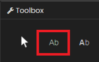
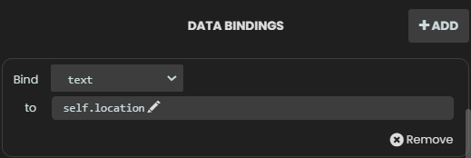
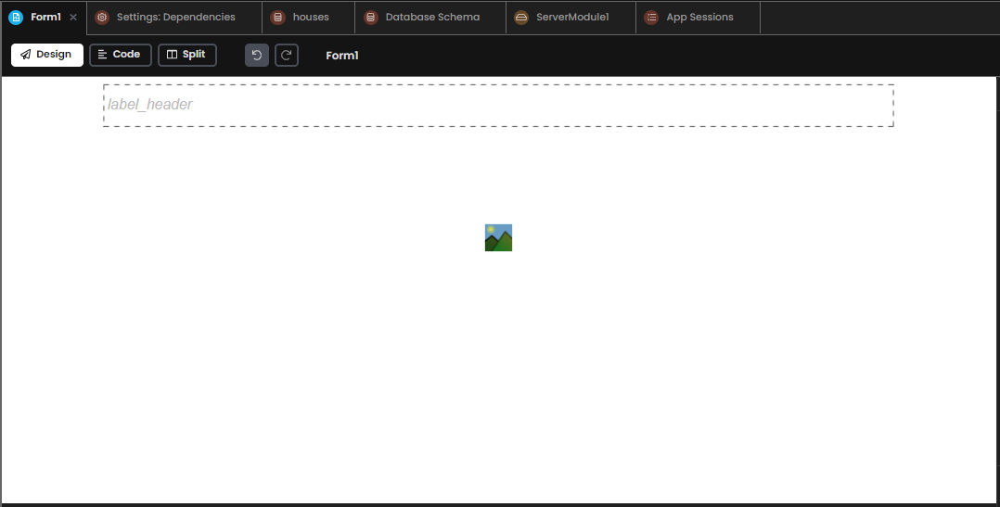
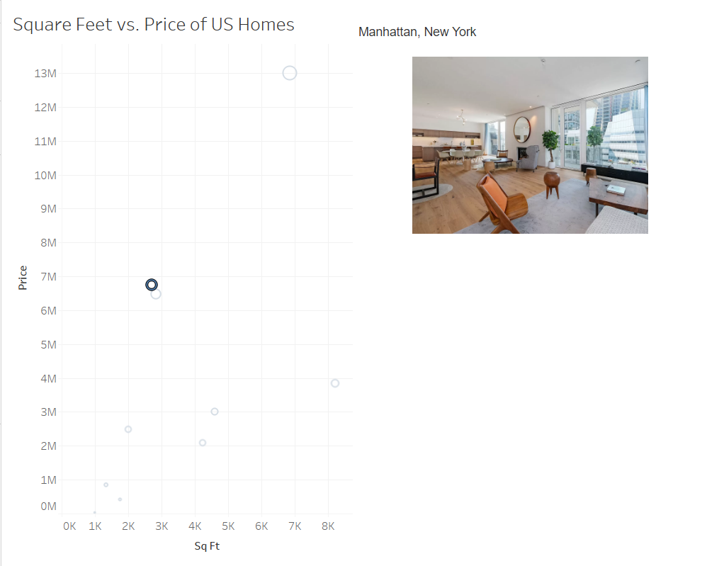
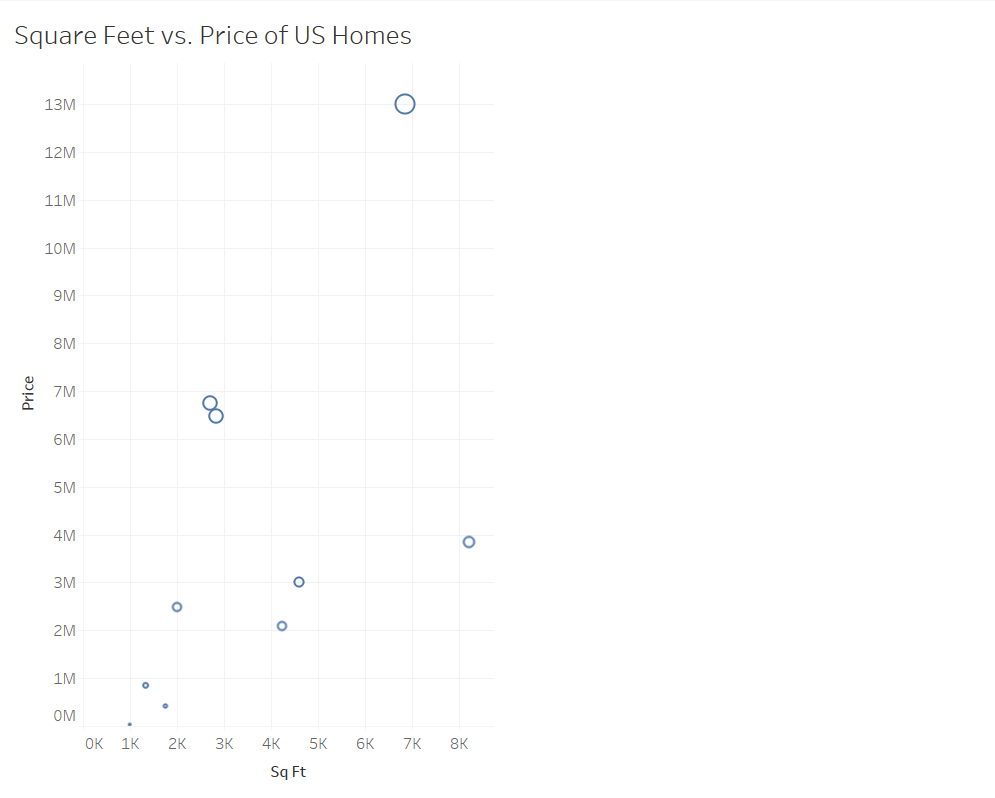

Chapter 7: Putting the finishing touches on our chat extension
We have learned several techniques for integrating Tableau with Anvil today. Let’s tie it all together so that the reactive image display extension is ready for your team’s use.
Step 1: Adding a reactive header
Let’s start by adding a Header so that our form has something more than just the reactive image display.
When we click on a mark, we want the House’s location to appear on the Form. Otherwise, we do not want a location. How can we go about doing this reactively?
How can we do this you might ask? Data Bindings. Data Bindings are a way of keeping a component’s properties in sync with the underlying data with minimal effort. More on this here.
Remember, we already have an attribute (self.location) in our Form for this task. self.location is a blank string when nothing is selected, and updates when a mark is selected in Tableau.
Navigate to Form1’s design pane, then toolbox and drag in a label:
Go to properties and rename your image to self.label_header. Then, under data bindings click ‘+Add’ and Bind ‘text’ to ‘self.location’, like this:
Your screen should now look something like this:
One last thing before we test this out. Data Bindings are set when a Form is opened and do not refresh or update unless explicitly told to do so.
Let’s add some code to the bottom of our selection_changed_event_handler method to make sure our data bindings refresh every time we select a mark in Tableau.
def selection_changed_event_handler(self, event):
user_selection = event.worksheet.selected_records
print(f"Got a selected record: {user_selection}, with length: ({len(user_selection)})")
if len(user_selection) == 0:
self.location = ""
self.sq_ft = 0
self.price = 0
self.row_id = None
self.image_display.source = None
else:
record = user_selection[0]
self.location = record['Location']
self.sq_ft = record['SUM(Sq Ft)']
self.price = record['SUM(Price)']
self.row_id = record['Row Id']
selected_house = anvil.server.call('get_img_path', image_id=self.row_id)
print(selected_house)
self.image_display.source = selected_house['image']
self.refresh_data_bindings()
See the bottom line of the code chunk. Each time ‘self.refresh_data_bindings()’ is called in the code, the Form’s data bindings will refresh.
Done! Let’s try it out. Go into Tableau, refresh your app and try clicking on a mark.
Nice! The location appears at the top of the Form. Let’s make sure it goes away when we un-select a mark.
Great work!
Optional: Clone the app
You can click the following link and explore it yourself or read on as we take a step-by-step guide to building it yourself: